白馬五竜スキー場・白馬八方尾根スキー場
| 日付 | 2021年2月10日（水） - 2021年2月13日（土） |
|---|---|
| メンバー | 家族（妻、長女・9歳、長男・7歳） |
| アクセス | 車 |
2日目
ダイニングからの景色。昨夜は相当雪が降ったようだ。
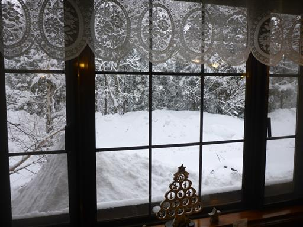
何もかもが雪に埋もれている。
スキー板を持って歩く労力か、車の除雪をする労力か、
どちらがましか微妙なところだが、車でスキー場まで移動することにする。
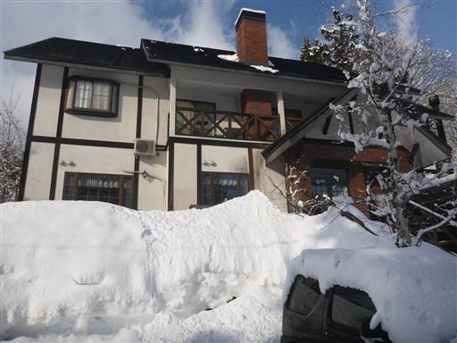
本日もゴンドラに乗って高いところから滑り降りる。
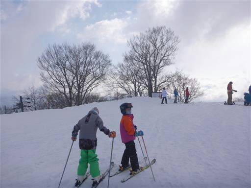
広い斜面だが傾斜は急。中級者コースだ。
ゴンドラで上に行くと初級者コースは無く、急斜面を滑り降りる必要がある。
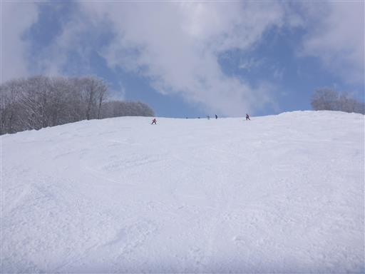
昨日よりだいぶ滑れるようになってきた。
1年に1～2回しか行かないので、感覚を掴むのに時間がかかる。
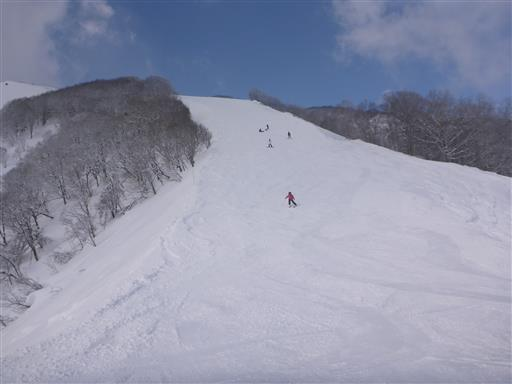
駐車場。本日は祝日のため、車の数は昨日よりはるかに多い。
本日は暖かく、車の上の雪は全て溶けている。
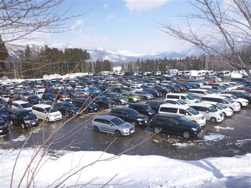
傾斜の無いところは頑張ってストックで押す。
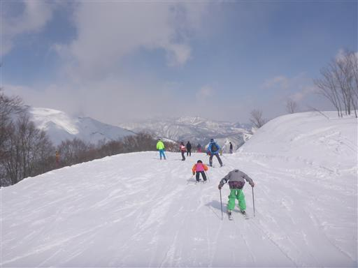
八方尾根を見ながら滑走。
本日も天気は良いが、昨日に比べると雲が多い。
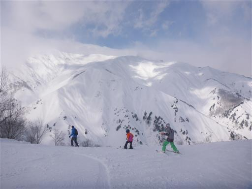
五竜岳は雲の中。
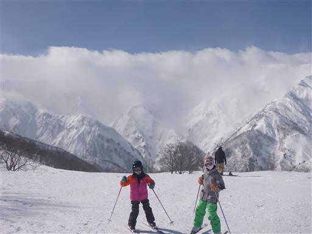
ゴンドラからカモシカを発見。
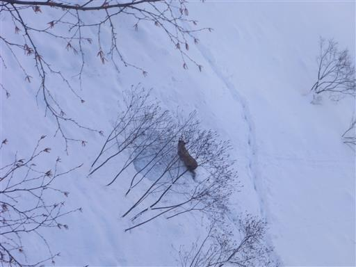
間近で見る雪の壁。

雪の模様が美しい。なぜこのような模様を描くのだろう？
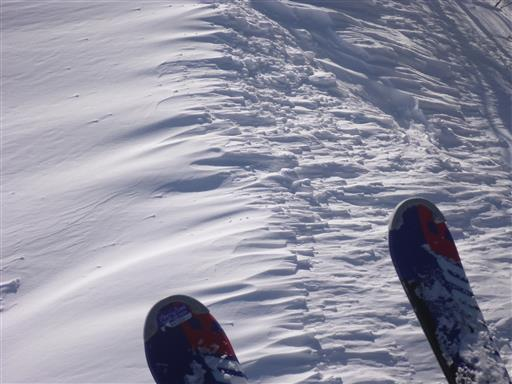
日が傾いてきた。斜面の凹凸が良く見える。
この辺りは初級者立入不可能だ。
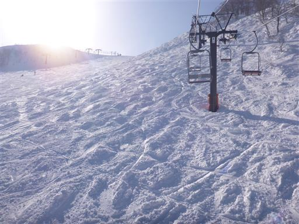
娘は急斜面が嫌という事で、しばらく息子と2人で練習。
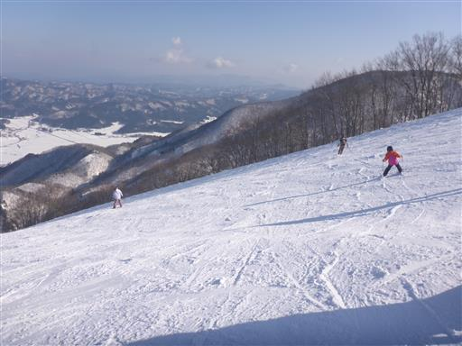
夕方になるとだいぶ晴れてきて、八方尾根の向こうに白馬三山が姿を現す。

高妻山方面の展望も素晴らしい。
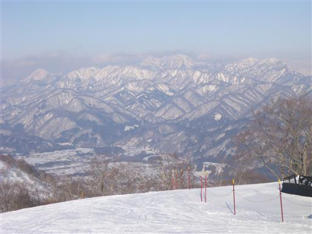
氷のオブジェ。16時前に最後の滑走を行って本日のスキーを終了する。
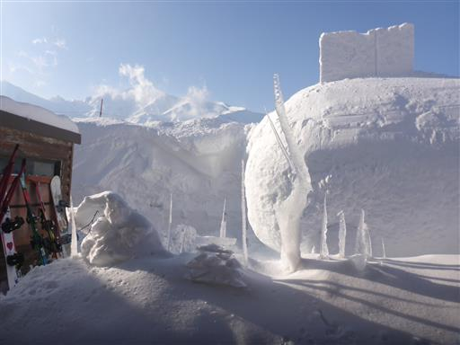
夜中に宿の周囲を散歩。スキー場を訪れてみると、ナイター運営をやっている。
夜は雪が凍って堅そうだ。
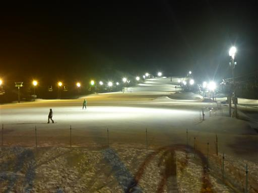
30分ほど散歩して宿に戻ってくる。
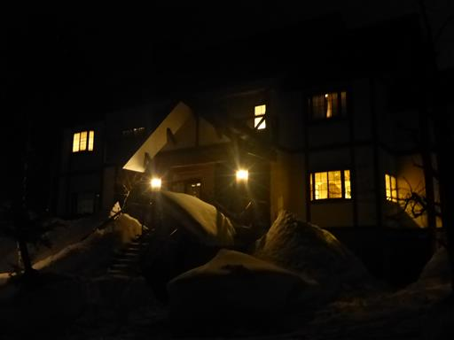